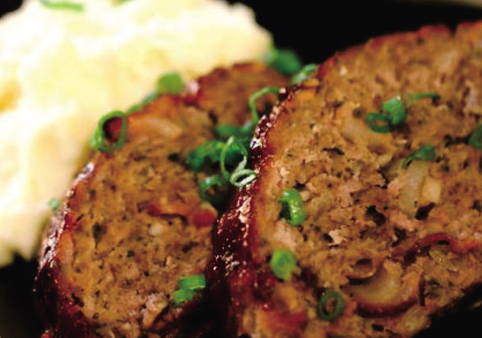

Air Fryer Meatloaf

Description
This simple air fryer meatloaf is easy to make and ready to eat in less than an hour.
Ingredients
- 1 pound lean ground beef
- 1 small onion, finely chopped
- 1 large egg, lightly beaten
- 3 tablespoons dry bread crumbs
- 1 tablespoon chopped fresh thyme
- 1 teaspoon salt
- ground black pepper to taste
- 2 mushrooms, thickly sliced
- 1 tablespoon olive oil, or as needed
Steps
- Preheat an air fryer to 392 degrees F (200 degrees C).
- Combine ground beef, onion, bread crumbs, thyme, egg, salt, and pepper in a bowl. Knead and mix thoroughly.
- Transfer mixture to a small loaf pan. Smooth the top, press in mushrooms, and coat with olive oil.
- Roast meatloaf in the preheated air fryer until nicely browned, about 25 minutes.
- An instant-read thermometer inserted into the center should read at least 165 degrees F (72 degrees C).
- Let meatloaf rest at least 10 minutes before slicing into wedges and serving.